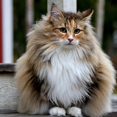
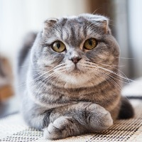

Ras Norwegia
Kucing Hutan Norwegia bukan hanya megah, tetapi juga salah satu ras kucing berbulu panjang yang paling cantik yang pernah ada.

Ras Siamese
Kucing Siam termasuk salah satu ras kucing tertua yang tercatat. Mereka adalah keturunan dari keluarga kucing Felidae.

Ras Scottish Fold
Scottish Fold mempunyai ciri kupingnya yang terlipat menyembul dari permukaan, kepalanya yang bulat terlihat seperti kucing manis yang menggunakan helm.